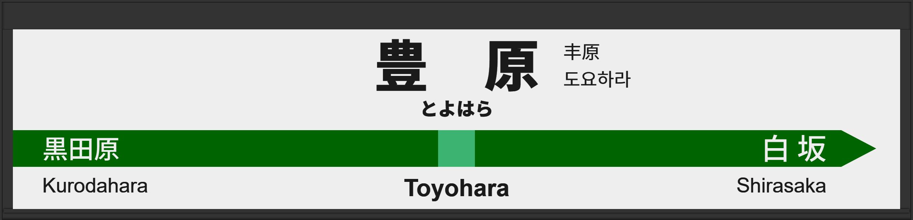

| ←黒田原 | ■ 東北本線 | 白坂→ |
|---|
2004年8月に常磐初期型ATOS放送を導入、しかし3時間で永楽型放送に戻る。
| 1 | ■ 東北本線 上野方面 |
1番線接近放送 |
放送は「普通 黒磯行」です。 向山佳衣子氏です。 |
|---|---|---|---|
| 2 | ■ 東北本線 盛岡方面 |
2番線接近放送 |
放送は「普通 新白河行」です。 津田英治氏です。 |